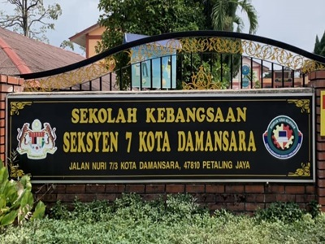
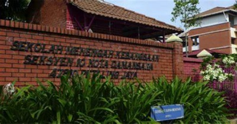
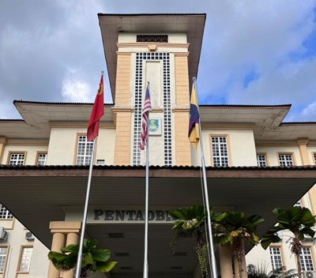

Sekolah Kebangsaan Seksyen 7 Kota Damansara
- SKS7KD was inaugurated on January 1, 1997, with the motto DISCIPLINE THE CORE OF SUCCESS
- I was appointed as a library supervisor when I was in standard 4th at this school
More about Primary School

Sekolah Menengah Kebangsaan Seksyen 10 Kota Damansara
- SMKS KD10 is a Government School serving grades 1-5. It is located in Kota Damansara, Selangor, Malaysia, next to Taman Eko Rimba Kota Damansara
- I was appointed as a library supervisor when I was in grade 4th at this school

Universiti Teknologi Mara (UiTM)
- UiTM Kedah was officiated on 1st October 1997 by YB Tun Daim Zainuddin, the Finance Minister. It started its first operation in November 1997 with 162 students and 25 administrative staff.
More about UiTM KEDAH